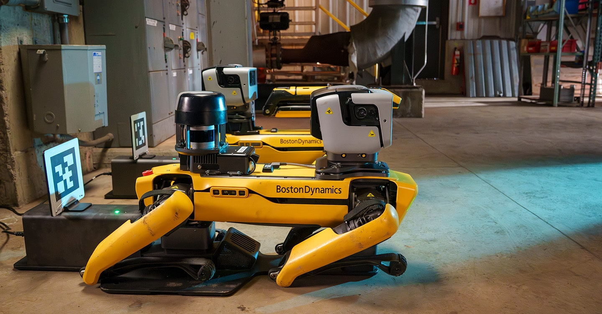
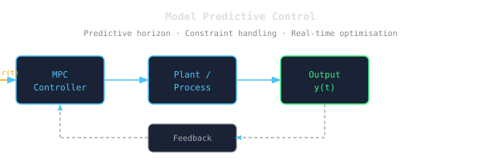
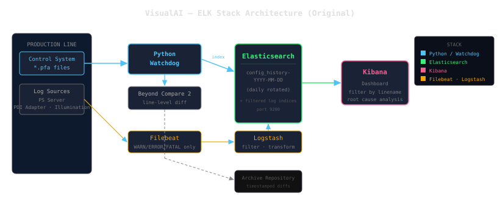
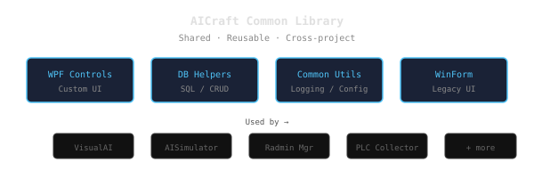
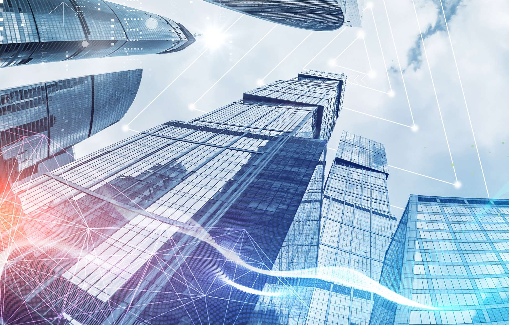

시스템 & 비전 엔지니어 · 前 SW 회사 대표
Rick Jun
산업용 비전 검사, OpenSearch/ELK 모니터링, AI 모델링 및 데이터 처리 그리고 PLC 까지 10년 이상의 현장 경험.
주요 프로젝트

Python · Multiprocessing · Spot SDK
PosRobot
Boston Dynamics Spot 제어를 위한 멀티프로세스 산업용 서버 — 이중 안전채널 아키텍처, 커스텀 바이너리 텔레그램 프로토콜, DB 기반 플릿 관리.

Python · TensorFlow · Plotly · 2022
Slab 냉각폭 예측 AI 모델
제강 연주공정의 냉각수량으로부터 1주일 뒤 슬래브 최종 폭을 예측하는 MLP 모델 — 결측 잦은 레이저 측정값을 슬라이딩 윈도우로 보완, 실시간 예측·시각화까지 구축.

Unity · C# · PLC
MPC1 — Digital Twin
실시간 PLC 연동이 가능한 공장 자동화 디지털 트윈, 인터랙티브 3D 시각화.

Multi-Agent · LangGraph · OpenSearch
Multi-Agent Metrics
멀티에이전트 자동화 파이프라인의 비용, 토큰 사용량, 세션을 시각화하는 인터랙티브 대시보드. CTO 에이전트 데이터 피드 연동.

Python · Elasticsearch · Beyond Compare 2 · 2021
VisualAI — Industrial Configuration & Log Intelligence
철강 생산라인의 제어 시스템 설정 변경 실시간 감지 및 ELK 스택 기반 중앙 로그 분석 시스템

C# · .NET Framework 4.8 · MS SQL Server · PostgreSQL · 2023
AICraft – 다중 데이터베이스 인프라 라이브러리
다중 데이터베이스 연결, 로그 관리, UI 유틸리티를 제공하는 .NET Framework 기반 인프라 라이브러리.

WPF · MVVM · LiveCharts · WebView2
AISimulator
실시간 시뮬레이션 데이터 시각화와 웹 대시보드 내장 기능을 통합한 산업용 WPF 데스크톱 애플리케이션.

Microsoft Access · VBA · Jet DB · 2021
Defect_Collector
제조 품질 관리용 단일 파일 기반 결함 추적 도구